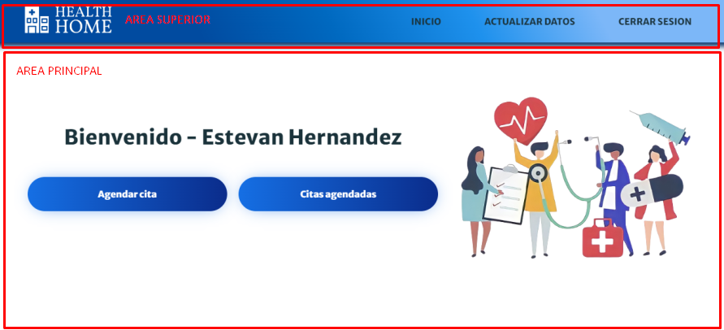
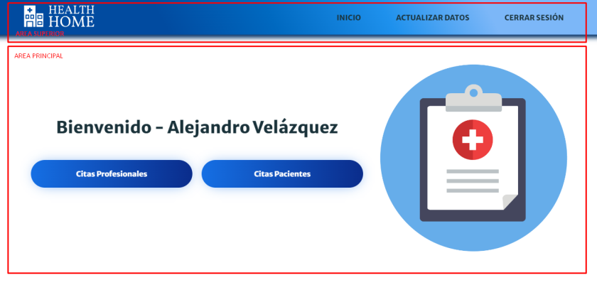
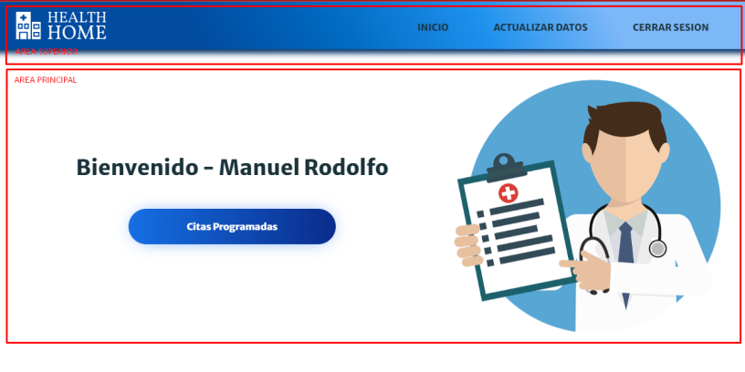
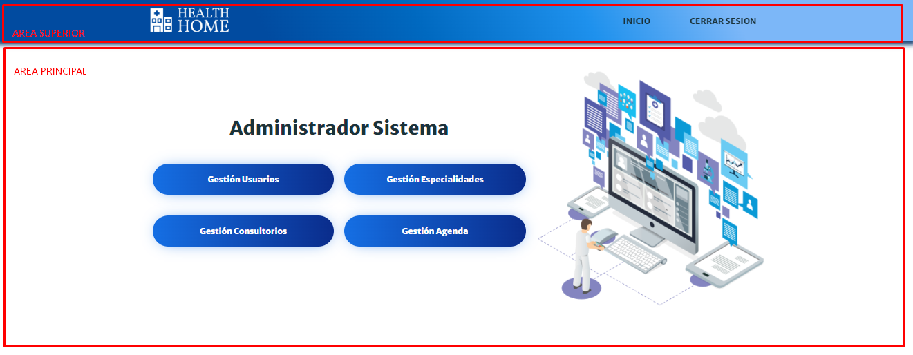
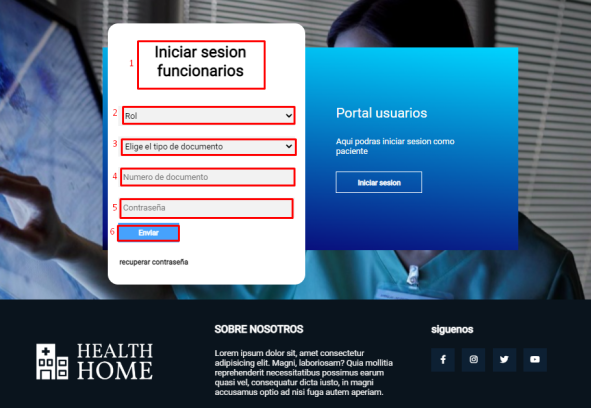
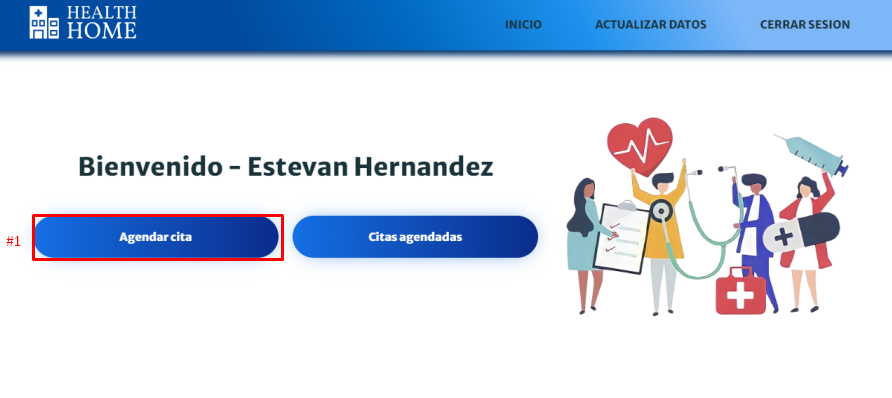
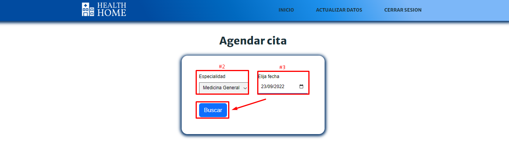
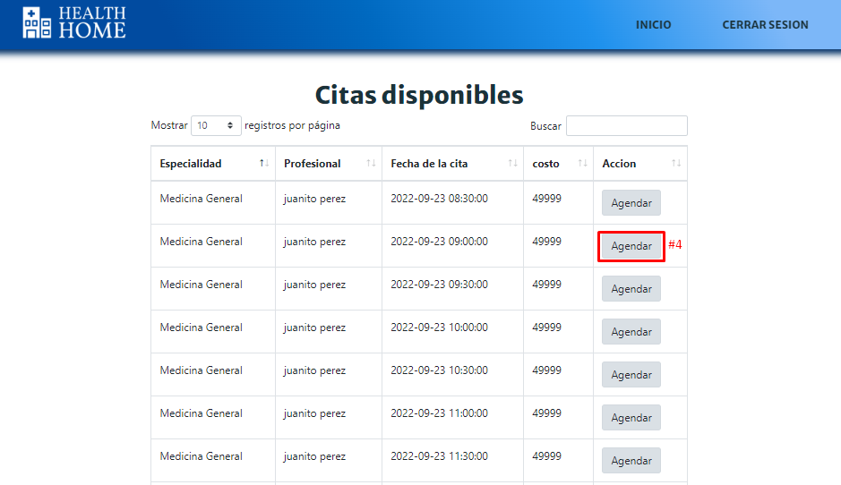

Introducción
En este manual se explica un paso a paso de forma detallada cómo los usuarios de la Clínica Health Home podrán utilizar de manera práctica el sistema, la cual está orientada a gestionar el proceso de agendas para la creación de citas, además, tiene la posibilidad de crear distintos roles que interactúan con el sistema surgiendo de sus necesidades como lo son: paciente, auxiliar y profesional. El sistema está diseñado para que el usuario pueda manejarlo desde su computador o dispositivo móvil.
2. Visión General de la plataforma
A continuación, se presentarán la estructura de cada uno de los módulo del sistema Health Home
2.1. Login
El módulo de inicio de sesión de los usuarios se divide en dos zonas:
- Area principal: Desde aquí podrá acceder a los módulos dependiendo del tipo de usuario.
- Area secundaria: Por defecto, en este apartado muestra la información general y de contacto, además, de las redes sociales de la clínica.

2.2. Paciente
El módulo del paciente se divide en dos zonas:
- Area principal: Aquí encontrara los módulos principales para los pacientes, los cuales son: Agendar cita y Citas agendadas.
- Area superior: Desde aquí podrá acceder a las diferentes funcionalidades de configuración como lo son: Inicio de la página, actualizar datos (Información general - contraseña), cerrar sesión.

2.3. Auxiliar
El módulo del auxiliar se divide en dos zonas:
- Area principal: Aquí encontrara los módulos principales para los auxiliares, los cuales son: Citas profesionales y Citas paciente.
- Area superior: Desde aquí podrá acceder a las diferentes funcionalidades de configuración como lo son: Inicio de la página, actualizar datos (Información general - contraseña), cerrar sesión.

2.4. Profesional
El módulo del profesional se divide en dos zonas:
- Area principal: Aquí encontrara el módulo para los profesionales, el cual es: Citas programadas.
- Area superior: Desde aquí podrá acceder a las diferentes funcionalidades de configuración como lo son: Inicio de la página, actualizar datos (Información general - contraseña), cerrar sesión.

2.5. Administrador
El módulo del administrador se divide en dos zonas:
- Area principal: Aquí encontrara los módulos principales para el administrador, los cuales son: Gestionar usuarios, Gestionar especialidades. Gestionar consultorios, Gestion agenda.
- Area superior: Desde aquí podrá acceder a las diferentes funcionalidades de configuración como lo son: Inicio de la página, cerrar sesión.

3. Inicio de sesión
En este módulo podrá iniciar sesión dependiendo el usuario, el cual tiene dos flujos alternativos, el primero es para los funcionarios (Profesional-Auxiliar-Administrador), el segundo para los pacientes, los cuales se detallas a continuación:
3.1 Funcionarios
- Para iniciar sesión como funcionario es ubicarse en el módulo “Iniciar sesión funcionarios”.
- Seleccionar el tipo de rol que va a iniciar sesión en el desplegable “rol”.
- Seleccionar el tipo de documento en el desplegable “elige el tipo de documento” (En caso de ser el administrador del sistema, no hay que seleccionar este campo).
- Digitar el número de documento en el apartado “número de documento”.
- Digitar la contraseña en el apartado “contraseña” (en caso de usuarios nuevos, la contraseña es el mismo número de documento).
- Seguidamente dar click en el botón “enviar” para dirigir al módulo del rol deseado.

3.2 Pacientes
- Para iniciar sesión como paciente es ubicarse en el módulo “Iniciar sesión pacientes”.
- Seleccionar el tipo de documento en el desplegable “elige el tipo de documento”.
- Digitar el número de documento en el apartado “número de documento”.
- Digitar la contraseña en el apartado “contraseña” (en caso de usuarios nuevos, la contraseña es el mismo número de documento).
- Seguidamente dar click en el botón “enviar” para dirigirse al módulo principal del paciente.

4. Paciente
Este tipo de rol tendrá varias interacciones con el sistema, los flujos de tareas se dividen en: Agendar cita, Ver citas agendadas, Cancelar cita agendada, Actualizar datos y Cerrar sesión, los cuales se detallarán a continuación.
4.1 Agendar cita
- Estando en el módulo de inicio del paciente (después de haber iniciado sesión), tendrá que dirigirse al botón “Agendar cita”.

- Seguidamente el paciente tendrá que seleccionar la especialidad en el desplegable “especialidad”.
- Después el paciente tendrá que seleccionar la fecha en el apartado de “fecha”, seguidamente dará click en el botón buscar.

- Se le cargará una tabla con las citas disponibles para la fecha y especialidad seleccionada anteriormente, el paciente tendrá que seleccionar alguna de estas dando click en el botón “Agendar”.

- El paciente tendrá que verificar el resumen de la cita y seguidamente dará click en el botón “Aceptar”.
4.2 Ver citas agendadas